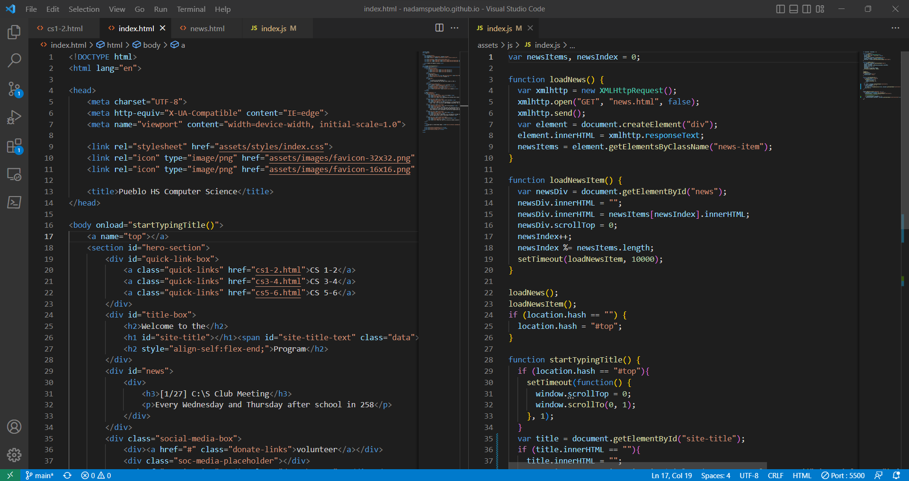

AP CS A is a course in Java programming, roughly equivalent to the introductory programming course at the
UofA, CS127a. It is much more technical than the previous two courses. However, students have a fair amount of
previous experience in JavaScript and Python and are able to transfer that knowledge into Java. Java is one of
the most commonly used programming languages. Java is used on the server-side of websites, to develop Android
apps, and to develop cross-platform applications that can run on iOS, Windows, and Linux. It is a lower-level
language compared to JavaScript and Python and therefore requires a more precise understanding about data
types and the structure of the language. The big challenges in this course are understandin Object Oriented
Programming, recursion, and sorting algorithms.
